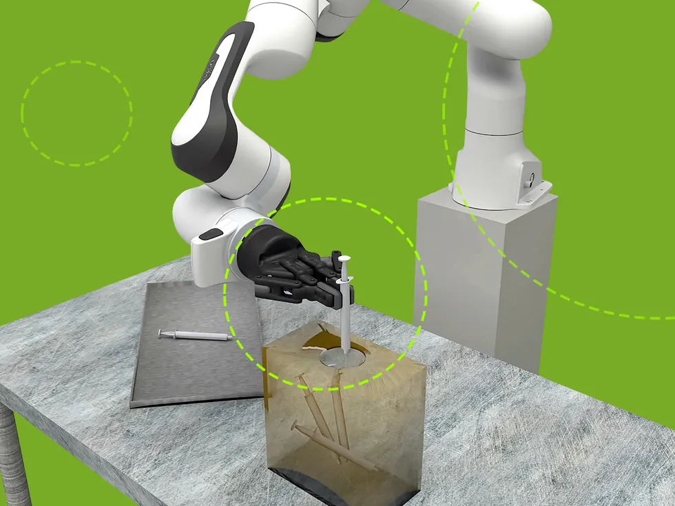

EMBODIED AI WEEKLY / 具身智能周报
具身智能前沿观察
2026年11月15日 · 全球具身智能情报精选

SIGNAL / 本周风向标
本周具身智能领域呈现出“控制创新与商业实战落地同步加速”的鲜明趋势。硬件与控制层面，波士顿动力通过为Atlas引入轮足融合与全身强化学习，打破传统控制边界；商业应用层面，智元G2在真实便利店场景完成24小时高强度实测，证明了具身机器人在复杂零售环境中的实用潜力；资本生态层面，Axon对Skydio的重磅投资进一步凸显了特定场景具身设备的商业吸引力。整体来看，高质量数据驱动与全栈控制突破正成为推动具身智能迈向通用化的核心双引擎。
BRIEF 01.01
波士顿动力为Atlas人形机器人增加轮足设计 探索全身强化学习控制
波士顿动力（Boston Dynamics）近日宣布为其Atlas人形机器人增加了轮式移动组件，用于测试并优化全身控制算法。
该技术结合了传统电机控制与全身强化学习（Whole-Body Reinforcement Learning），旨在大幅提升机器人在复杂动态环境下的移动与平衡能力。
影响解读
轮足结合是当前人形机器人提高移动效率与地形适应性的重要探索方向，通过强化学习融合传统控制架构，有望突破复杂地形下的动作流畅度与稳定瓶颈。
信息来源：The Robot Report
BRIEF 01.02
探讨智能体机器人技术：能否破局具身智能数据扩展瓶颈？

▲ 图片来源：IEEE Spectrum Robotics
针对机器人领域长期面临的数据获取与扩展难题，行业正在广泛讨论智能体机器人（Agentic Robotics）技术路径的可行性。
目前机器人企业正大量投入，试图通过吸收海量人类示范数据，让机器人具备自主执行绝大多数手动任务的能力。
影响解读
数据规模化是具身智能向通用机器人演进的关键障碍，智能体架构与高质示范数据的结合将加速具身大模型在多场景的泛化应用。
信息来源：IEEE Spectrum Robotics
BRIEF 02.01
Axon获12亿美元战略投资并注资Skydio 布局公共安全无人机市场
Axon宣布对无人机厂商Skydio进行高达12亿美元的投资，并成为其在美公共安全领域的独家分销商。
双方计划将Skydio无人机深度融入Axon的“无人机作为第一响应者”（Drone as First Responder）项目中，推动公共安全自动化。
影响解读
大额资本注入凸显了特种具身智能设备在垂直领域的商业价值与加速落地趋势。
信息来源：The Robot Report
BRIEF 03.01
智元机器人G2完成上海便利店24小时实测 成功执行1730项任务
六台智元AGIBOT G2机器人在上海一家真实运营的便利店中完成了24小时连续实测，累计完成1,730项作业任务。
测试涵盖客户服务、零售日常运营及具身AI实战能力，其中四台机器人顺利通过了高强度的综合性能评估。
影响解读
真实零售场景的24小时不间断实测验证了具身机器人在商业服务领域的连续作业能力与高可靠性，为大规模商业化部署提供了重要数据支撑。
信息来源：The Robot Report
EDITOR'S PERSPECTIVE
具身智能的发展正从单纯的技术概念向硬件形态演进与场景真实考验双向深入。波士顿动力为Atlas增加轮足设计，说明人形机器人的终极形态并非固守双足，而是服务于全身动态控制的最优解；智元G2在便利店24小时测试中完成1730项任务，则标志着具身智能开始真正啃下高频、动态、非标准化商业环境的硬骨头。
然而，规模化落地的核心瓶颈依然集中在数据扩展与高可靠鲁棒性上。智能体机器人能否通过示范数据破解数据泛化难题，仍需在更多泛化场景中接受检验。未来1-2年内，能够在特定高频场景形成数据-控制-商业收益闭环的企业，将最先赢得具身智能这场马拉松的赛点。
EMBODIED AI WEEKLY · 持续观察具身智能最前沿